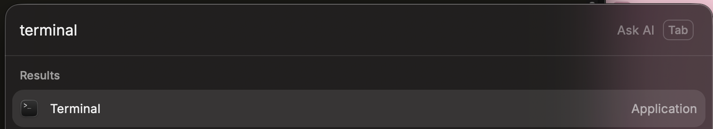
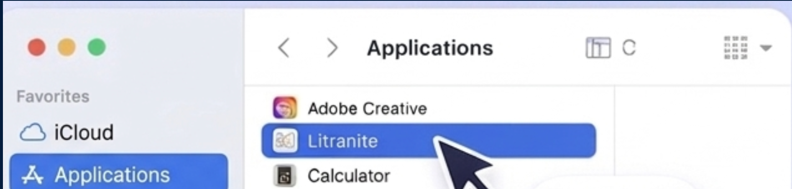

Install on Mac.
Which Mac do you have?
Macs made from late 2020 onward run on Apple Silicon (M1, M2, M3, M4). Older ones have an Intel chip. They need different downloads — the wrong one simply won't open.
We ask your graphics chip, because every Mac browser claims to be “Intel” whatever the hardware. It’s right on almost every Mac, but if Litranite won’t open, try the other build.
Or check it yourself — it's two clicks
Click the apple menu in the top-left corner of your screen, then About This Mac. A small window opens:
It says Chip — download the Apple Silicon build.
It says Processor — download the Intel build.
Your Mac needs macOS 10.15 Catalina or newer. The same window shows which macOS you're on.
Apple Silicon
M1 · M2 · M3 · M4 — any Mac from late 2020 on. About This Mac says Chip.
Download for Apple Silicon Litranite_aarch64.dmgIntel
Any Mac from before late 2020. About This Mac says Processor.
Download for Intel Litranite_x64.dmgNot sure? Use the check above. Picked wrong? Nothing breaks — the app just won't open, so come back and take the other one.
Watch the whole thing first
Every step, start to finish, in about forty seconds. No sound, nothing to download.
This software needs to be updated. Contact the developer for more information.
$
Download the build that matches your Mac.
Open the disk image
Double-click Litranite_1.5.0_aarch64.dmg — it's in your Downloads folder, or at the end of Safari's download list (the arrow in the toolbar). A little window opens showing the Litranite icon beside your Applications folder.
Drag Litranite into Applications
Drag the Litranite icon onto the Applications folder in that same window. That copies the app onto your Mac. Afterwards you can eject the disk image (click the ⏏ beside it in Finder) and delete the .dmg.
Don't run Litranite from the disk image. If you double-click it inside that window without dragging it across first, the command in step 3 won't find it.
Open it the first time — the part everyone gets stuck on
Litranite isn't notarized by Apple yet (that costs $99 a year, and we're two students), so macOS stops it the first time. Nothing is wrong with the app. Try these in order — most people only need the first.
a. In Finder › Applications, right-click (or Control-click) Litranite and choose Open. In the box that appears, click Open again. Double-clicking will not work — it has to be the right-click menu.
b. If there was no Open button, go to menu › System Settings › Privacy & Security, scroll down, and click Open Anyway next to the message about Litranite. (On macOS 12 and older: System Preferences › Security & Privacy › General.)
c. If macOS insists Litranite “is damaged and can't be opened”, one command clears the quarantine flag. Press ⌘ + Space, type Terminal, hit Return, then paste this and press Return:

➜ xattr -cr /Applications/Litranite.app
Nothing visible happens — no output, no confirmation. That's exactly right. Now open Litranite normally.

If something still goes wrong
The exact words macOS shows you, and what each one means.
“Litranite is damaged and can't be opened. You should move it to the Bin.”
Nothing happens at all when I open it
“Apple cannot check it for malicious software”
Terminal says “No such file or directory”
The .dmg won't open, or says the image isn't recognised
Can I use the Intel build on an M1/M2/M3 Mac?
Which macOS do I need?
Where did the app go after I dragged it?
How do I uninstall it?
Still stuck
You’re ready to read.
Drop in a PDF, start highlighting, and everything stays in one quiet place.
See how it worksStuck on a step? Email litranite@gmail.com — we answer.